Interpretation of Classification Models
Source:vignettes/articles/classification.Rmd
classification.RmdThis article presents some examples of the interpretation of
classification models using midr.
# load required packages
library(midr)
library(ggplot2)
library(gridExtra)
library(Metrics)
theme_set(theme_midr())Classification Task
We use the titanic dataset, which is available on the website https://www.encyclopedia-titanica.org/ and is included
in the DALEX package. The dataset has 9 variables for 2207
people, of which 1317 were passengers and 890 were crew members. We fit
some classification models that predict who survived the tragedy and who
did not, and then we interpret the fitted models.
# benchmark classification task
library(DALEX)
#> Welcome to DALEX (version: 2.4.3).
#> Find examples and detailed introduction at: http://ema.drwhy.ai/
#> Additional features will be available after installation of: ggpubr.
#> Use 'install_dependencies()' to get all suggested dependencies
set.seed(42)
test_rows <- sample(nrow(titanic), 500L)
train <- titanic[-test_rows, -5]
str(train)
#> 'data.frame': 1707 obs. of 8 variables:
#> $ gender : Factor w/ 2 levels "female","male": 2 1 1 2 2 1 2 2 2 2 ...
#> $ age : num 42 39 16 25 30 28 27 20 30 27 ...
#> $ class : Factor w/ 7 levels "1st","2nd","3rd",..: 3 3 3 3 2 2 3 3 3 3 ...
#> $ embarked: Factor w/ 4 levels "Belfast","Cherbourg",..: 4 4 4 4 2 2 2 4 4 4 ...
#> $ fare : num 7.11 20.05 7.13 7.13 24 ...
#> $ sibsp : num 0 1 0 0 1 1 0 0 0 0 ...
#> $ parch : num 0 1 0 0 0 0 0 0 0 0 ...
#> $ survived: Factor w/ 2 levels "no","yes": 1 2 2 2 1 2 2 2 1 1 ...
test <- titanic[ test_rows, -5]
str(test[, -9])
#> 'data.frame': 500 obs. of 8 variables:
#> $ gender : Factor w/ 2 levels "female","male": 2 2 1 2 2 2 2 2 1 2 ...
#> $ age : num 74 19 32 21 40 23 24 26 34 28 ...
#> $ class : Factor w/ 7 levels "1st","2nd","3rd",..: 3 3 2 3 4 3 5 5 2 5 ...
#> $ embarked: Factor w/ 4 levels "Belfast","Cherbourg",..: 4 2 4 4 4 4 4 4 4 1 ...
#> $ fare : num 7.15 7.04 21 8.08 0 ...
#> $ sibsp : num 0 0 0 0 0 0 0 0 1 0 ...
#> $ parch : num 0 0 0 0 0 0 0 0 1 0 ...
#> $ survived: Factor w/ 2 levels "no","yes": 1 1 2 1 1 1 2 1 2 2 ...For each model type, we fit a classification model using the
train data of 1707 people and an interpretative MID
surrogate of the target model using the same data. We then evaluate the
predictive accuracy of the target model and the interpretative accuracy
of the MID surrogate based on the AUC between the test and
predicted probabilities or the Spearman’s rank correlation coefficient
between two predicted probabilities, respectively.
# define utility functions for the following chunks
link <- list(
linkfun = function(mu) binomial()$linkfun(pmax(1e-9, pmin(1 - 1e-9, mu))),
linkinv = binomial()$linkinv
)
effect_plots <- function(object) {
plots <- mid.plots(mid, terms = terms(mid)[1:6])
for (i in 1:6) {
plots[[i]] <- plots[[i]] + ggtitle("main effect")
if (any(i == c(1, 3, 4)))
plots[[i]] <- plots[[i]] + coord_flip()
}
plots
}
interaction_plot <- function(object, data) {
ggmid(mid, "age:class", type = "data", data = na.omit(titanic),
theme = "Temps", main.effects = TRUE) +
theme(legend.position = "bottom") +
ggtitle("main effect + interaction")
}
ice_plot <- function(object, data) {
ggmid(mid.conditional(mid, "age", data = data),
var.color = gender, theme = "Set 1") +
theme(legend.position = "bottom") +
ggtitle("conditional expectation")
}
importance_plot <- function(object) {
ggmid(mid.importance(object), "dotchart", theme = "Okabe-Ito") +
theme(legend.position = "bottom") +
ggtitle("feature importance")
}
evaluation_plot <- function(pred, pred_mid, actual) {
auc_vs_test <- auc(actual, pred)
cor_vs_mid <- cor(pred, pred_mid, method = "spearman",
use = "pairwise.complete.obs")
ggplot() + scale_color_theme("Accent") +
geom_point(aes(x = pred, y = actual, col = "vs test"),
data = na.omit(data.frame(pred, actual))) +
geom_point(aes(x = pred, y = pred_mid, col = "vs mid"),
data = na.omit(data.frame(pred, pred_mid))) +
geom_abline(slope = 1, intercept = 0, col = "black", lty = 2) +
theme(legend.position = "bottom") + xlim(0, 1) +
labs(x = "model-prediction", y = "mid-prediction / test") +
annotate(
"text", family = "serif", size = 3, x = 0.2, y = 0.8,
label = sprintf("vs test (AUC): %.3f\nvs mid (Spearman): %.3f",
auc_vs_test, cor_vs_mid)
) + ggtitle("prediction/interpretation accuracy")
}Additive Models
Logistic Regression
model <- glm(survived == "yes" ~ ., family = "binomial", data = train)
mid <- interpret(survived ~ .^2, train, model, link = "logit")
pred <- get.yhat(model, test)
pred_mid <- predict(mid, test)
print(mid)
#>
#> Call:
#> interpret(formula = yhat ~ .^2, data = train, model = model,
#> link = "logit")
#>
#> Intercept: -0.921
#>
#> Model Class: glm, lm
#>
#> Main Effects:
#> 7 main effect terms
#>
#> Interactions:
#> 21 interaction terms
#>
#> Uninterpreted Rate: 0
grid.arrange(grobs = effect_plots(mid), nrow = 2L)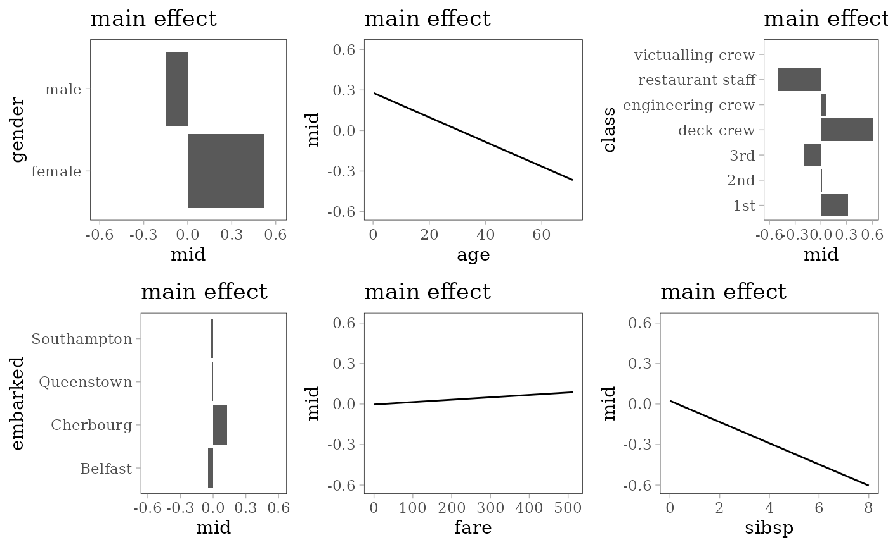
grid.arrange(nrow = 1L, interaction_plot(mid),
ice_plot(mid, test[1:100, ]))
grid.arrange(nrow = 1L, importance_plot(mid),
evaluation_plot(pred, pred_mid, (test$survived == "yes") * 1L))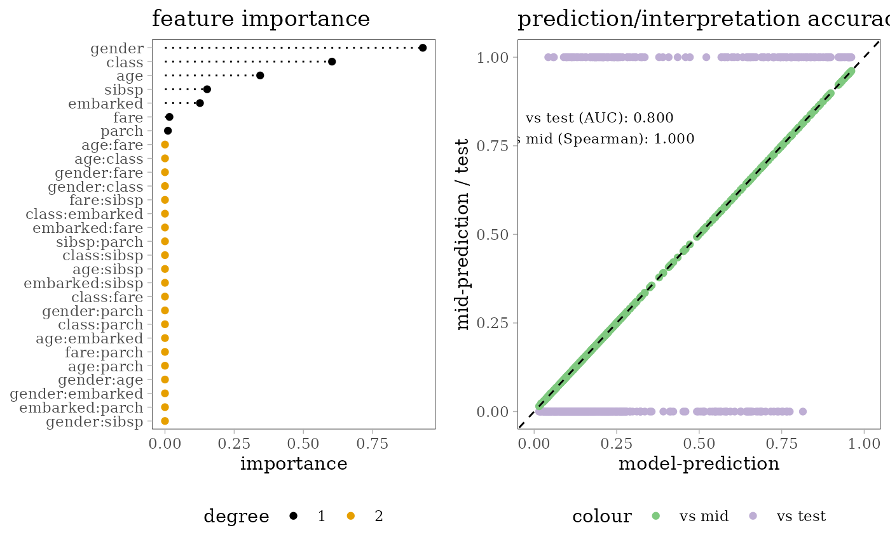
Neural Network
Single Hidden Layer Network
library(nnet)
set.seed(42)
model <- nnet(survived ~ ., train, size = 5, maxit = 1e3, trace = FALSE)
mid <- interpret(survived ~ .^2, train, model, link = link, lambda = .1)
pred <- get.yhat(model, test)
pred_mid <- predict(mid, test)
print(mid)
#>
#> Call:
#> interpret(formula = yhat ~ .^2, data = train, model = model,
#> link = link, lambda = 0.1)
#>
#> Intercept: -0.84955
#>
#> Model Class: nnet.formula, nnet
#>
#> Main Effects:
#> 7 main effect terms
#>
#> Interactions:
#> 21 interaction terms
#>
#> Uninterpreted Rate: 0.059739
grid.arrange(grobs = effect_plots(mid), nrow = 2L)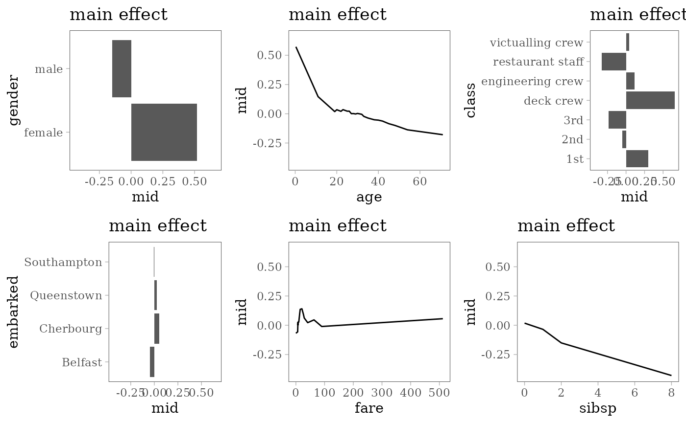
grid.arrange(nrow = 1L, interaction_plot(mid),
ice_plot(mid, test[1:100, ]))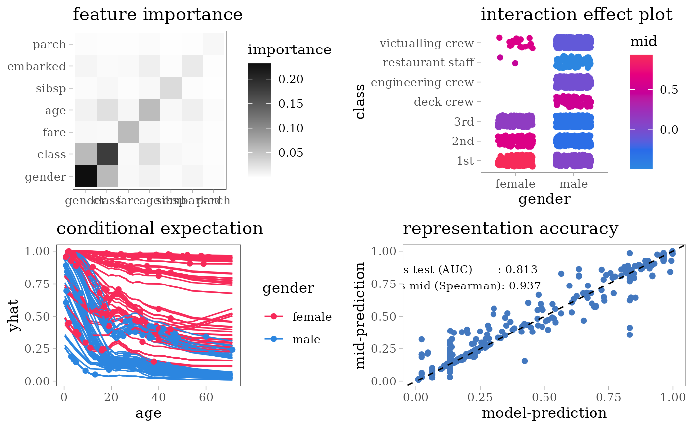
grid.arrange(nrow = 1L, importance_plot(mid),
evaluation_plot(pred, pred_mid, (test$survived == "yes") * 1L))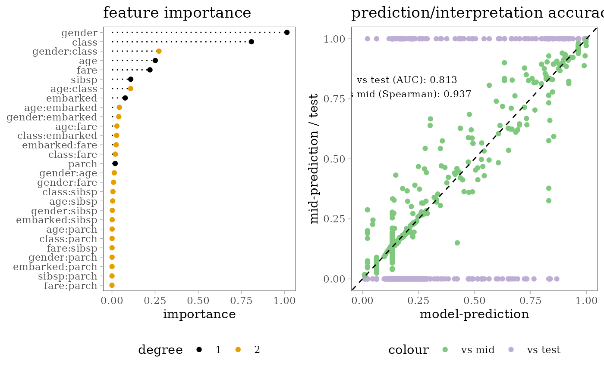
Support Vector Machine
RBF Kernel SVM
library(e1071)
model <- svm(survived ~ ., train, kernel = "radial", probability = TRUE)
mid <- interpret(survived ~ .^2, train, model, link = link,
pred.args = list(target = "yes"), lambda = .1)
pred <- get.yhat(model, test, target = "yes")
pred_mid <- predict(mid, test)
grid.arrange(grobs = effect_plots(mid), nrow = 2L)
grid.arrange(nrow = 1L, interaction_plot(mid),
ice_plot(mid, test[1:100, ]))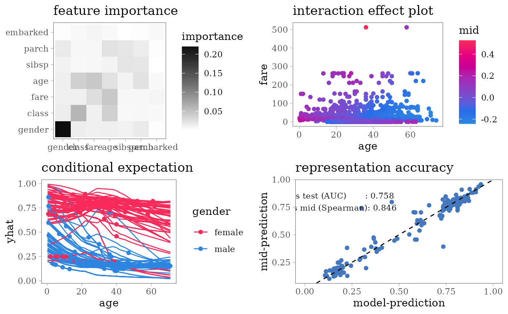
grid.arrange(nrow = 1L, importance_plot(mid),
evaluation_plot(pred, pred_mid, (test$survived == "yes") * 1L))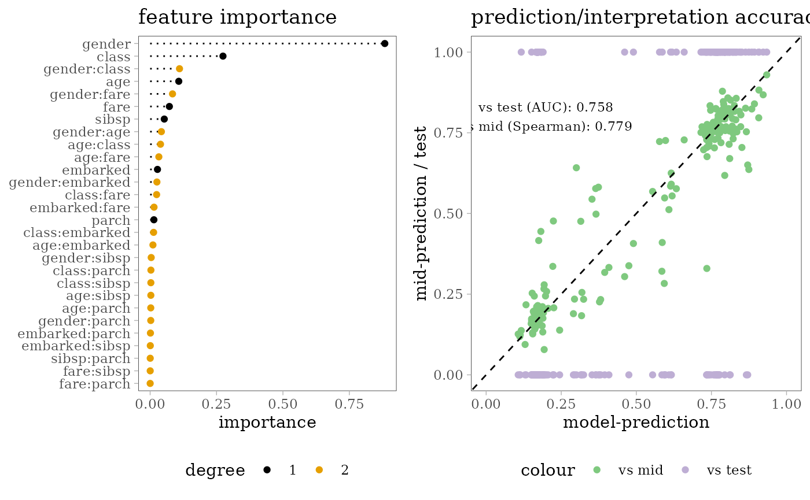
Tree Based Models
Random Forest
library(ranger)
set.seed(42)
model <- ranger(survived ~ ., na.omit(train), probability = TRUE)
mid <- interpret(survived ~ .^2, train, model, link = link,
pred.args = list(target = "yes"), lambda = .1)
pred <- get.yhat(model, test, target = "yes")
pred_mid <- predict(mid, test)
print(mid)
#>
#> Call:
#> interpret(formula = yhat ~ .^2, data = train, model = model,
#> pred.args = list(target = "yes"), link = link, lambda = 0.1)
#>
#> Intercept: -0.82531
#>
#> Model Class: ranger
#>
#> Main Effects:
#> 7 main effect terms
#>
#> Interactions:
#> 21 interaction terms
#>
#> Uninterpreted Rate: 0.084207
grid.arrange(grobs = effect_plots(mid), nrow = 2L)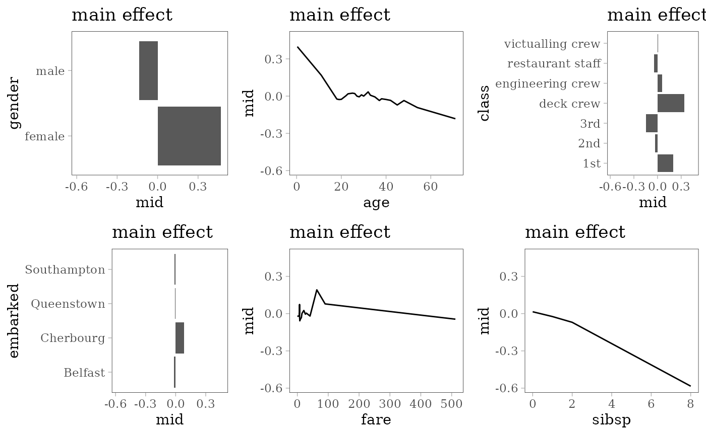
grid.arrange(nrow = 1L, interaction_plot(mid),
ice_plot(mid, test[1:100, ]))
grid.arrange(nrow = 1L, importance_plot(mid),
evaluation_plot(pred, pred_mid, (test$survived == "yes") * 1L))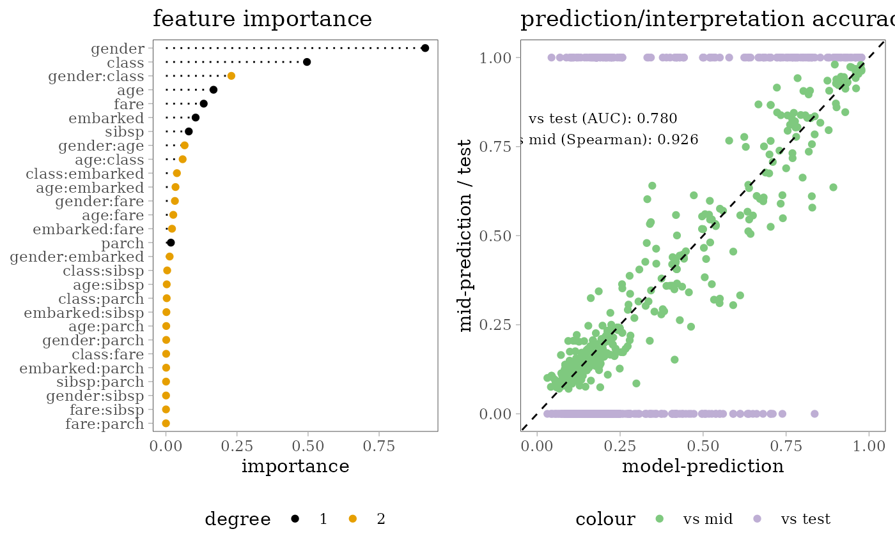
Decision Tree
library(rpart)
model <- rpart(survived ~ ., train)
mid <- interpret(survived ~ .^2, train, model, link = link,
pred.args = list(target = "yes"), lambda = .1)
pred <- get.yhat(model, test, target = "yes")
pred_mid <- predict(mid, test)
print(mid)
#>
#> Call:
#> interpret(formula = yhat ~ .^2, data = train, model = model,
#> pred.args = list(target = "yes"), link = link, lambda = 0.1)
#>
#> Intercept: -0.87452
#>
#> Model Class: rpart
#>
#> Main Effects:
#> 7 main effect terms
#>
#> Interactions:
#> 21 interaction terms
#>
#> Uninterpreted Rate: 0.074538
grid.arrange(grobs = effect_plots(mid), nrow = 2L)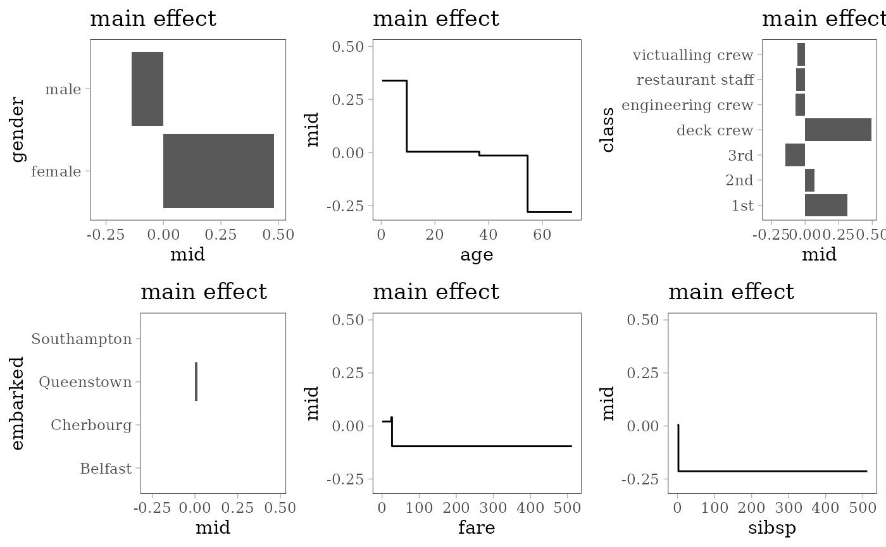
grid.arrange(nrow = 1L, interaction_plot(mid),
ice_plot(mid, test[1:100, ]))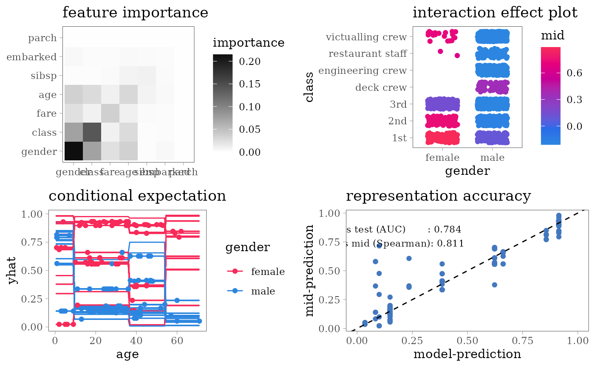
grid.arrange(nrow = 1L, importance_plot(mid),
evaluation_plot(pred, pred_mid, (test$survived == "yes") * 1L))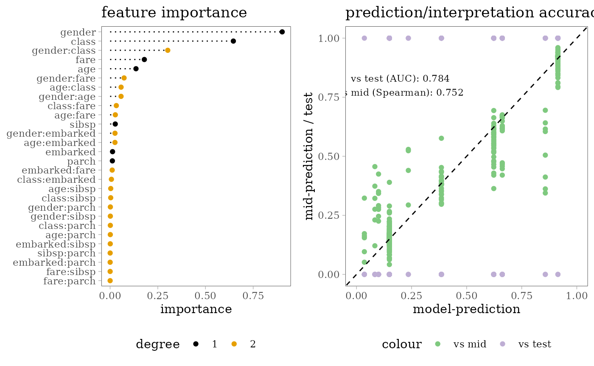
Other Models
Predictive MID
train$survived <- relevel(train$survived, "yes")
# unlike glm(), interpret() takes the first level as the target
mid <- interpret(survived ~ .^2, train, lambda = 10, link = link)
#> 'model' is not passed: the response variable in the data is used
pred <- pred_mid <- predict(mid, test)
print(mid)
#>
#> Call:
#> interpret(formula = survived ~ .^2, data = train, lambda = 10,
#> link = link)
#>
#> Intercept: -7.3423
#>
#> Main Effects:
#> 7 main effect terms
#>
#> Interactions:
#> 21 interaction terms
#>
#> Uninterpreted Rate: 0.65527
grid.arrange(grobs = effect_plots(mid), nrow = 2L)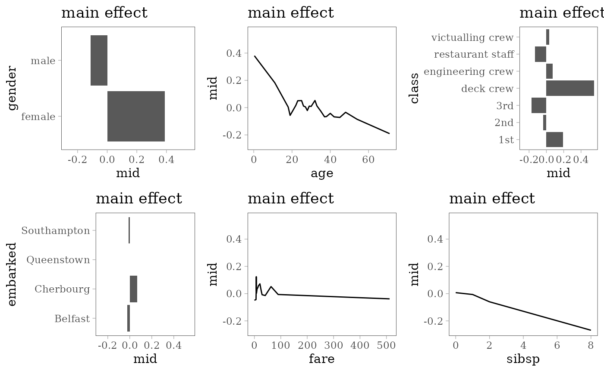
grid.arrange(nrow = 1L, interaction_plot(mid),
ice_plot(mid, test[1:100, ]))
grid.arrange(nrow = 1L, importance_plot(mid),
evaluation_plot(pred, pred_mid, (test$survived == "yes") * 1L))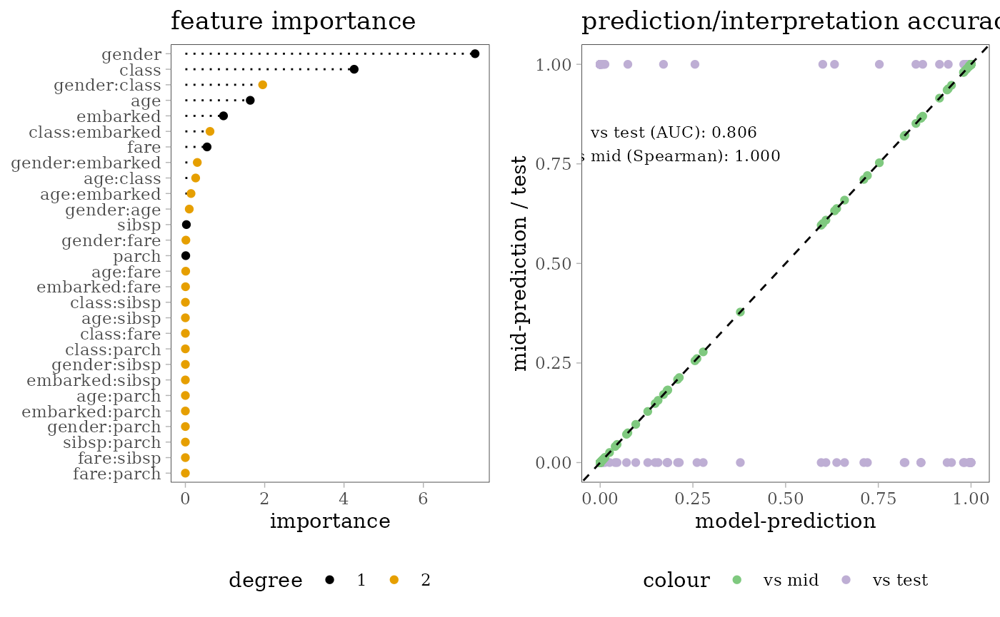